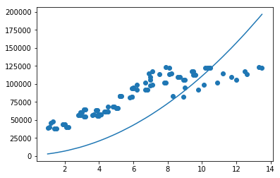
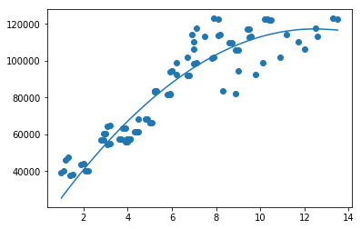

在线性回归分析的时候，我用了一条直线去拟合年龄和工资的数据，结果不是太贴合的。我们尝试先用多次方程组来拟合数据。
我们先把数据读出出来。
import tensorflow as tf
import pandas as pd
import numpy as np
from matplotlib import pyplot as pltunrate = pd.read_csv('SD.csv')
unrate = unrate.sort_values('Year')
print(unrate) Year Salary
0 1.0 39451
30 1.1 40343
1 1.2 46313
31 1.3 47605
2 1.4 37839
.. ... ...
85 12.0 106247
86 12.5 117634
87 12.6 113300
88 13.3 123056
89 13.5 122537
[90 rows x 2 columns]这次我们用一个二次方程来拟合一下这些数据。
方程我们定义为如下：
\[ \hat(y_i)=W_1*x_i^2 + W_2*x_i+b\]
那么这样的话，我们就有三个参数 W_1, W_2, b。我们先给这三个参数一个初始数值。
w_1 = 1000
w_2 =1000
b = 1000
print(w_1)
print(w_2)
print(b)
y_pred = w_1* np.power(unrate['Year'],2) + w_2* unrate['Year'] + b
plt.scatter(unrate['Year'],unrate['Salary'])
plt.plot(unrate['Year'],y_pred)
plt.show()1000
1000
1000
我们如果按照上述的模型，求出预测值\(\hat{y}\)，我们需要一个函数来评估这个值的好坏。
\[loss=\sum_{i=0}^{n} (y_i -\hat{y}_i)^2\]
这个函数和一次的一样，没有任何变化。接下来，我们需要求出这个函数的导函数。
\[\frac{dl}{dw_1} = \frac{dl}{d\hat{y}}*\frac{d\hat{y}}{dw_1} =-2\sum_{i=0}^{n}(y_i-\hat{y}_i)*x_i^2 \]
\[ \frac{dl}{dw_2} = \frac{dl}{d\hat{y}}*\frac{d\hat{y}}{dw_2}=-2\sum_{i=0}^{n}(y_i-\hat{y}_i)*x_i \]
\[ \frac{dl}{db}=\frac{dl}{d\hat{y}}*\frac{d\hat{y}}{db}=-2\sum_{i=0}^{n}(y_i-\hat{y}_i) \]
我们来把上述的函数代码化
def train(w_1,w_2, b):
learning_rate = 0.000001
y_pred = w_1* np.power(unrate['Year'],2) + w_2* unrate['Year'] + b
dw_1 = -2*np.sum( np.transpose(unrate['Salary'] - y_pred)*np.power(unrate['Year'],2))
dw_2 = -2*np.sum( np.transpose(unrate['Salary'] - y_pred)*unrate['Year'])
db = -2*np.sum((unrate['Salary'] - y_pred))
temp_w_1 = w_1 - learning_rate * dw_1
temp_w_2 = w_2 - learning_rate * dw_2
temp_b = b - learning_rate * db
w_1 = temp_w_1
w_2= temp_w_2
b = temp_b
return w_1,w_2,b
我们来运行下测试下效果：
for i in range(10000):
w_1, w_2, b = train(w_1,w_2,b)
print(w_1)
print(w_2)
print(b)
y_pred = w_1 * np.power(unrate['Year'],2) + w_2 * unrate['Year'] + b
loss = np.power((y_pred-unrate['Salary']),2).sum()
plt.scatter(unrate['Year'],unrate['Salary'])
plt.plot(unrate['Year'],y_pred)
-695.3117280326662
17380.592541992835
8744.131370136933
8487947406.30475
上面就是我们拟合出来的效果。
我们可以看出来，比我们之前一次的拟合的数据要好很多。